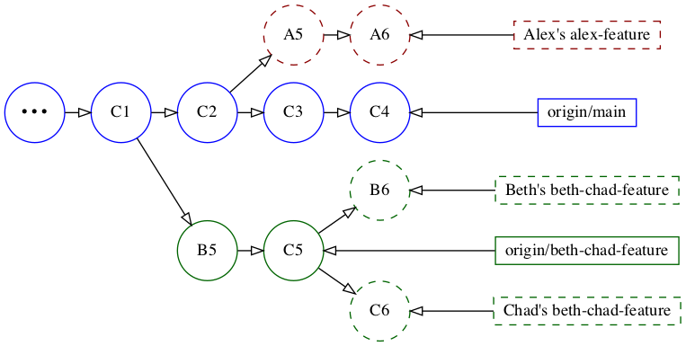
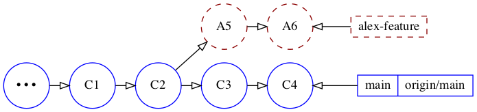
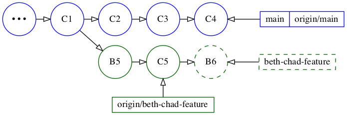
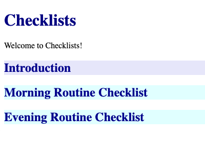
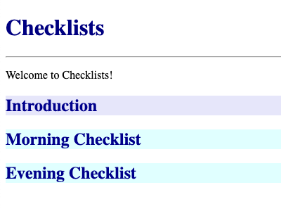
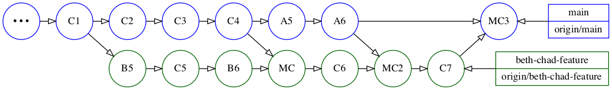

9.特征分支工作流程¶
在上一章中，你学到了如何使用集中式工作流直接在主分支上工作，这在某些情况下很方便。
然而，大多数时候，你会使用某种版本的Feature Branch Workflow。在开始做一个新功能之前，你会从主分支中创建一个新的分支，然后在上面工作。完成后，再将该特性分支合并到主分支中。
创建特性分支，实质上是为主分支提供自己的冻结版本。它还允许你推迟向主干分支推送你的提交，直到你的特性完成，这样可以使主干处于更稳定的状态。
在本章中，你将学习如何在团队环境中有效地处理特性分支--也就是说，当多个开发人员都在处理分支时，他们会定期将这些分支合并到主干。
你还将学习有关重定位和合并的最佳实践，并在此过程中掌握一些小技巧和窍门。
何时使用特征分支工作流¶
在一些有限的情况下，集中式工作流是很适合的。在所有其他情况下，你会使用某种形式的特性分支工作流程。
特性分支工作流是所有其他Git工作流的基础，比如Gitflow和Forking工作流。
根据团队的需要，你可以选择使用这个工作流程的简单版本，也可以决定采用额外的要求，比如指定开发人员需要以某种方式命名特性分支，或者使用特定的前缀。
以下是一些你肯定需要使用特性分支工作流程的场景。
当平行开发功能时¶
当在一个团队中工作时，等到一个开发者完成他们的工作后，另一个开发者才开始工作往往是不可行的。开发人员需要在同一个代码库中并行地开发多个功能。
例如，一个团队可能会修改一个页面的设计，而另一个团队则向其添加额外的内容。
在你自己也在修改代码的时候，你要在不断变化的代码上工作，这也是不可行的。你所工作的代码需要保持稳定，直到你准备好拉入其他的更新。
即使在你自己工作的时候，你也可能在一个功能工作到一半的时候，不得不切换到另一个功能上工作。你需要一种方法来存储正在进行的代码，直到你可以回来使用它。
创建一个特性分支，可以让开发者或团队在准备好将其集成到主干系统之前，在代码的某个快照上工作。
当你的代码需要审查时¶
无论团队规模如何，也无论你同时做多少个功能，如果你需要其他开发者来审查你的代码，你必须使用功能分支。
如果你的代码在并入主干之前需要审查，那么根据定义，你不能用主干分支来推送你的代码进行审查！
当分享仍在开发中的代码时¶
特性分支允许你在将代码合并到主干线之前分享它。例如，你可能需要另一个开发者目前正在开发的代码，所以主干中还没有。在这种情况下，你可以从另一个有你需要的代码的分支创建你的分支。
一旦你把另一个分支合并到主干，你就可以重新建立主干，这样就可以从你的分支中删除其他分支的提交。这样，你就可以开始处理仍在开发中的代码了。
当在一个功能上进行协作时¶
分支允许你在开发新功能时与其他开发者进行协作。多个开发者可以在一个共享的分支上工作，然后在他们完成功能后将该分支合并到开发中。
这使得主要的功能在开发过程中保持稳定。一旦功能的开发和测试阶段完成，它就可以一次性合并到main。
开始吧¶
和上一章一样，你将通过扮演不同的开发者来模拟在一个团队中工作。然而，在本章中，你会更多地转换角色。
自上一章以来，发生了一些事情。一个新的开发者Chad加入了团队，而且团队已经转而使用特征分支工作流。
从本章的starter文件夹中解压repos.zip开始。与上一章相比，现在你会看到在starter/repos文件夹下有一个额外的Chad的已签出项目：
starter
└── repos
├── alex
│ └── checklists
├── beth
│ └── checklists
├── chad
│ └── checklists
└── checklists.git
和上一章一样，在你的终端应用中打开四个标签，在每个标签中打开以下目录：
cd path/to/projects/starter/repos/alex/checklists # 1st Tab
cd path/to/projects/starter/repos/beth/checklists # 2nd Tab
cd path/to/projects/starter/repos/chad/checklists # 3rd Tab
cd path/to/projects/starter/repos/checklists.git # 4th Tab
每个开发者的检查列表仓库都有他们没有推送到远程服务器的本地提交。下面的部分将给你一个概览，介绍你要处理的分支以及其中的提交状态。
项目的初始状态¶
团队一直在两个特性分支上努力工作。Alex在一个名为alex-feature的分支上工作，而Beth和Chad则在一个名为beth-chad-feature的共享分支上工作。
下面的图片让你看到每个开发者的本地仓库的初始状态以及它与远程源的关系。实线标注的提交已经被推送到远程，而虚线标注的提交仍在每个开发者的本地仓库中。最初的省略号(•••)节点代表C1之前main上的所有提交。

Alex在main处于C2时创建了alex-feature分支，并在其上添加了两个本地提交，A5和A6。他还没有把这个分支推送到远程，所以这个分支只存在于他的本地仓库。
Beth和Chad在main处于C1时创建了共享的beth-chad-feature分支。他们已经把它的前两个提交，即B5和C5，推送到远程。Beth和Chad都有一个额外的提交，分别是B6和C6，在他们共享分支的本地版本。
为了确认哪些提交已经被推送到远程，在终端中切换到checklists.git标签，并运行以下命令：
git log --oneline --graph --all
你会看到以下情况，确认main在C4，如上图，beth-chad-feature在遥控器上的C5：
* b2deca5 (beth-chad-feature) C5: Added <footer> to <body>
* 4fbfda4 B5: Moved <h1> and <p> within <header>
| * 51bdc3c (HEAD -> main) C4: Updated section styling to use a class
| * 6a52517 C3: Added "Introduction" section
| * fcb3dbc C2: Added background-color css for section
|/
* 6bc53bb C1: Added "Morning Routine Checklist" section
...
在本章中你不需要第四个checklists.git标签，所以你现在可以关闭它以简化事情。
由于本章的内容比较多，下面的部分将给你一个本章中要执行的任务的概述。
项目路线图¶
如前所述，你在这一章中的角色转换会比较多--不仅仅是因为Chad加入了这个团队，还因为还有很多事情要做。:]
以下是本章中你要做的事情的快速路线图。你不需要记住所有这些内容。它的目的是让你了解你将执行的不同任务，以便你对接下来的工作有心理准备。
你将首先用main上的新代码更新alex-feature和beth-chad-feature分支。由于一个分支是共享的，而另一个不是，所以你要以不同的方式更新每个分支。
你还需要确保你的特性分支在用main的代码更新后仍能正常工作。当然，也会有一些意外的副作用需要你去修复。
你将在alex-feature上修复一个问题，然后将该分支推送上去供人审查。然后，你将审查Beth分支，并将其合并到main。
然后，由于main又被更新了，Chad会用main中的新代码更新共享分支，然后再把共享分支推送上去审核。当然，如果不解决合并冲突，这一章就不完整了。
在你深入学习之前，还有最后一件事需要学习。如果你打算把特性分支并入主干，为什么要在合并之前用主干的最新代码更新特性分支？这个问题将在下一节讨论。
用main更新分支的重要性¶
用main的新代码来更新你的分支有两个主要原因。
第一个原因，也是最重要的原因，是为了进行正确的代码审查。一旦你完成了你的分支的工作，并准备推送它进行审查，你要确保你的代码能与主干分支上的最新代码正确地整合。
可能有一些冲突需要解决，或者需要根据主分支上的最新变化进行其他修改。基于主干分支的过时版本来审查代码，一旦你把审查过的代码并入主干分支，可能会导致错误。
第二个原因是，你自己的代码不会与主分支相差太远。如果主干上有新的更新影响到你的分支，你越早整合它们，你以后要做的修改就越少。
如何用main更新分支¶
有两种方法可以用main来更新你的分支。你可以把你的分支重新放到main上，或者把main分支合并到你的本地分支。
如果你正在处理一个尚未推送到远程的本地分支，那么重放是首选。重新发布分支可以避免合并提交，并使历史记录更容易回顾。
另一方面，如果你在一个已经被推送到远程的共享分支上工作，比如beth-chad-feature分支，你应该把main合并到你的分支中。你不应该重新建立其他开发者正在使用的公共分支。
一个例外是，如果你是唯一一个在你推送到远程的分支上工作的人。有时，开发者会定期将长期运行的分支推送到远程作为备份。
如果没有人在使用你的分支，你可以重写它。由于重载会重写分支历史，所以在重载之后，你必须强制推送。
更新两个项目分支¶
由于alex-feature还没有被推送到origin，你要把它重新放到main上。由于beth-chad-feature已经被推送到origin，并且Beth和Chad共享它，你将把main合并到它里面。
每个开发者都已经拉了main，所以他们本地的main分支和远程的分支都是最新的。
在终端中切换到alex/checklists标签，并运行以下程序来验证Alex的本地仓库的当前状态：
git log --oneline --graph --all
你会看到以下内容：
* b2deca5 (origin/beth-chad-feature) C5: Added <footer> to <body>
* 4fbfda4 B5: Moved <h1> and <p> within <header>
| * 9f06a73 (HEAD -> alex-feature) A6: Added "Evening Routine Checklist" section
| * 427b5ee A5: Added h2 color to style.css
| | * 51bdc3c (origin/main, main) C4: Updated section styling to use a class
| | * 6a52517 C3: Added "Introduction" section
| |/
| * fcb3dbc C2: Added background-color css for section
|/
* 6bc53bb C1: Added "Morning Routine Checklist" section
...
你对origin/beth-chad-feature的引用并不感兴趣，这使日志变得复杂--你只想看到alex-feature分支与main的关系。你可以不使用--all，而是指定一个要包括的分支列表。
用alex-feature和main而不是--all来运行前面的命令：
git log --oneline --graph alex-feature main
你会看到下面的情况，看起来应该会好很多：
* 9f06a73 (HEAD -> alex-feature) A6: Added "Evening Routine Checklist" section
* 427b5ee A5: Added h2 color to style.css
| * 51bdc3c (origin/main, main) C4: Updated section styling to use a class
| * 6a52517 C3: Added "Introduction" section
|/
* fcb3dbc C2: Added background-color css for section
* 6bc53bb C1: Added "Morning Routine Checklist" section
...
在视觉上，这相当于以下情况：

由于alex-feature是当前分支，运行以下程序将其重新归入·：
git rebase main
重置应该没有冲突。该分支现在直接在主干线前面：

你也可以再次运行之前的日志命令来验证重定位：
git log --oneline --graph alex-feature main
你会看到，现在的历史是线性的：
* 5a22c9d (HEAD -> alex-feature) A6: Added "Evening Routine Checklist" section
* b803ccc A5: Added h2 color to style.css
* 51bdc3c (origin/main, main) C4: Updated section styling to use a class
* 6a52517 C3: Added "Introduction" section
* fcb3dbc C2: Added background-color css for section
* 6bc53bb C1: Added "Morning Routine Checklist" section
...
恭喜你，你已经成功地用main中的改动更新了alex-feature分支。接下来，你将通过合并main来更新beth-chad-feature分支。
在终端中切换到beth/checklists标签并运行：
git log --oneline --graph --all
你会看到：
* 19f8c99 (HEAD -> beth-chad-feature) B6: Added <hr/> in <header>
* b2deca5 (origin/beth-chad-feature) C5: Added <footer> to <body>
* 4fbfda4 B5: Moved <h1> and <p> within <header>
| * 51bdc3c (origin/main, main) C4: Updated section styling to use a class
| * 6a52517 C3: Added "Introduction" section
| * fcb3dbc C2: Added background-color css for section
|/
* 6bc53bb C1: Added "Morning Routine Checklist" section
...
在视觉上，这相当于以下情况：

现在，将main合并到已经签出的beth-chad-feature分支：
git merge main
输入:wq接受Vim中默认的提交信息。
为了验证合并，再次运行之前的日志命令：
git log --oneline --graph --all
你会看到下面的内容，它证实了合并的结果：
* 7ddf0a8 (HEAD -> beth-chad-feature) Merge branch 'main' into beth-chad-f...
|\
| * 51bdc3c (origin/main, main) C4: Updated section styling to use a class
| * 6a52517 C3: Added "Introduction" section
| * fcb3dbc C2: Added background-color css for section
* | 19f8c99 B6: Added <hr/> in <header>
* | b2deca5 (origin/beth-chad-feature) C5: Added <footer> to <body>
* | 4fbfda4 B5: Moved <h1> and <p> within <header>
|/
* 6bc53bb C1: Added "Morning Routine Checklist" section
...
在视觉上，这相当于下面的合并提交用MC表示：

接下来，Beth将推送她的本地B6提交，以及合并后的提交到远程分支。运行以下程序，将分支推送到原点：
git push
现在，beth-chad-feature的起源版本既有B6也有合并提交：

接下来，你要在beth-chad-feature上拉出最新的修改，以获得Beth推送到该分支的更新。
在你的终端应用中切换到chad/checklists标签。
在你提取之前，运行同样的日志命令来查看版本库的状态：
git log --oneline --graph --all
你会看到与贝丝最初的情况类似的东西：
* 347bcd3 (HEAD -> beth-chad-feature) C6: Removed "Routine" from heading
* b2deca5 (origin/beth-chad-feature) C5: Added <footer> to <body>
* 4fbfda4 B5: Moved <h1> and <p> within <header>
| * 51bdc3c (origin/main, main) C4: Updated section styling to use a class
| * 6a52517 C3: Added "Introduction" section
| * fcb3dbc C2: Added background-color css for section
|/
* 6bc53bb C1: Added "Morning Routine Checklist" section
...
这相当于以下内容：

Chad的本地beth-chad-feature分支仍然直接领先于远程跟踪的origin/beth-chad-feature分支，因为Chad还没有获取或拉取。
运行以下程序，从远程获取最新的更新信息：
git fetch
然后运行同样的日志命令：
git log --oneline --graph --all
你会看到以下内容：
* 7ddf0a8 (origin/beth-chad-feature) Merge branch 'main' into beth-chad-fe...
|\
| * 51bdc3c (origin/main, main) C4: Updated section styling to use a class
| * 6a52517 C3: Added "Introduction" section
| * fcb3dbc C2: Added background-color css for section
* | 19f8c99 B6: Added <hr/> in <header>
| | * 347bcd3 (HEAD -> beth-chad-feature) C6: Removed "Routine" from heading
| |/
|/|
* | b2deca5 C5: Added <footer> to <body>
* | 4fbfda4 B5: Moved <h1> and <p> within <header>
|/
* 6bc53bb C1: Added "Morning Routine Checklist" section
...
下面的图片可能会使它更容易理解一些：

Chad的beth-chad-feature分支与origin/beth-chad-feature发生了分歧。如果你还记得上一章的内容，这与你的main有本地提交，但另一个开发者更新了origin/main的情况相同。
在这种情况下，远程分支发生了分歧，运行普通的git pull会导致合并提交，所以你需要添加--rebase选项。
运行以下程序：
git pull --rebase
Note
Chad实际上已经通过运行git config pull.rebase true将拉动配置为自动回溯，正如前一章中提到的。所以在这种情况下，你可以不使用--rebase选项。
哇，有一个合并冲突!
Auto-merging index.html
CONFLICT (content): Merge conflict in index.html
error: could not apply 347bcd3... C6: Removed "Routine" from heading
Resolve all conflicts manually, mark them as resolved with
"git add/rm <conflicted_files>", then run "git rebase --continue".
You can instead skip this commit: run "git rebase --skip".
To abort and get back to the state before "git rebase", run "git rebase --abort".
Could not apply 347bcd3... C6: Removed "Routine" from heading
Beth从main上合并的修改导致了这个合并冲突。
在信息中，你会看到它说：could not apply 347bcd3... C6: Removed "Routine" from heading。
运行git show 347bcd3来看看该提交的内容。你会看到以下变化：
C6: Removed "Routine" from heading
...
<section>
- <h2>Morning Routine Checklist</h2>
+ <h2>Morning Checklist</h2>
</section>
...
这似乎是一个简单的改变。乍得从Morning Routine Checklist中删除了Routine一词，使之成为Morning Checklist。
在文本编辑器中打开index.html来解决冲突。你会在以下区域看到冲突的标记：
16 <main>
17 <<<<<<< HEAD
18 <section class="intro-section">
19 <h2>Introduction</h2>
20 </section>
21
22 <section class="checklist-section">
23 <h2>Morning Routine Checklist</h2>
24 =======
25 <section>
26 <h2>Morning Checklist</h2>
27 >>>>>>> 347bcd3 (C6: Removed "Routine" from heading)
28 </section>
29 </main>
冲突是由于两个不同的提交修改了相邻的行。在main的合并提交中，class="checklist-section"被添加到<section>标签中，使其成为<section class="checklist-section">。
在Chad对C6的修改中，Chad将<h2>晨间例行检查表</h2>一行在<section>下面更新为<h2>晨间检查表</h2>。
删除=======下面的旧<section>标记行（第25行）和上面的旧<h2>行（第23行），然后删除所有三个冲突标记行。
现在它应该是这样的：
16 <main>
17 <section class="intro-section">
18 <h2>Introduction</h2>
19 </section>
20
21 <section class="checklist-section">
22 <h2>Morning Checklist</h2>
23 </section>
24 </main>
要完成重建工作，请运行以下内容：
git add index.html
git rebase --continue
最后，在打开的Vim窗口中输入 :wq，提交与现有信息的修改。
为了验证你是否正确解决了冲突，你可以运行git show HEAD或者直接运行git show，它将显示当前分支上最新提交的内容。
git show
现在你会在差异中看到以下变化：
C6: Removed "Routine" from heading
...
<section class="checklist-section">
- <h2>Morning Routine Checklist</h2>
+ <h2>Morning Checklist</h2>
</section>
...
现在，运行git push来推送你的重构和无冲突提交到共享的beth-chad-feature分支。
git push
乍得的存储库现在处于以下状态：

祝贺你！你成功地将main分支的最新修改并入alex-feature和beth-chad-feature。你成功地将main分支的最新修改并入alex-feature和beth-chad-feature。你还将Beth和Chad的本地提交推送到共享的beth-chad-feature分支。
将特性分支合并到main¶
Alex已经准备好推送他的分支供人审阅。他将做最后的git fetch，看看是否有人向main推送了额外的更新，他需要重新建立。
切换到终端的alex/checklists标签，运行git fetch：
git fetch
你会看到你的远程origin/beth-chad-feature分支指针已被更新，但main没有任何额外更新。
...
From ../../checklists
b2deca5..45874cd beth-chad-feature -> origin/beth-chad-feature
你也可以运行之前的特定分支的日志命令来验证这一点：
git log --oneline --graph alex-feature main
你可以看到main分支与origin/main是最新的：
* 5a22c9d (HEAD -> alex-feature) A6: Added "Evening Routine Checklist" section
* b803ccc A5: Added h2 color to style.css
* 51bdc3c (origin/main, main) C4: Updated section styling to use a class
* 6a52517 C3: Added "Introduction" section
* fcb3dbc C2: Added background-color css for section
* 6bc53bb C1: Added "Morning Routine Checklist" section
如果你还记得，在重新调整Alex的分支时，并没有任何合并冲突。
然而，没有合并冲突并不能保证Alex所做的任何更新都能与添加到main的任何新代码正确整合。
运行以下程序，在你的默认浏览器中打开index.html，进行视觉检查：
open index.html
你会看到以下内容：
请注意，Evening Routine Checklist部分的标题没有Morning Routine Checklist部分的浅青色背景。这是因为提交的C4改变了CSS背景颜色的应用方式。
要显示C4的内容，你可以运行git show 51bdc3c。不过，由于main在C4处，你也可以用git show main来查看main上最新的提交内容。
运行下面的程序，可以看到C4的修改情况：
git show main
下面是你将看到的index.html变化的简略版本：
C4: Updated section styling to use a class
...
diff --git a/index.html b/index.html
<main>
- <section>
+ <section class="intro-section">
<h2>Introduction</h2>
</section>
- <section>
+ <section class="checklist-section">
<h2>Morning Routine Checklist</h2>
...
你会看到style.css的内容如下：
diff --git a/style.css b/style.css
...
-section {
+.checklist-section {
background-color: lightcyan;
}
+
+.intro-section {
+ background-color: lavender;
+}
在C4之前，background-color: lightcyan风格适用于<section>标签。但是C3增加了一个Introduction部分，这需要一个不同的背景颜色。在C4中，background-color: lightcyan样式被更新为适用于任何使用checklist-section类的标签，而不是所有<section>标签。
尽管Alex的分支上的修改本身是正确的，但它们是基于C2的main的早期版本。这使得在Alex将其与main中更新的style.css文件整合后，在C4中的改动是不正确的。
为了解决这个问题，Alex需要在他新添加的Evening Routine Checklist部分添加checklist-section类。
在文本编辑器中打开index.html，在第22行的现有章节标签中添加class="checklist-section"，使之成为<section class="checklist-section">。
完成后，运行git diff，它应该显示以下变化：
- <section>
+ <section class="checklist-section">
<h2>Evening Routine Checklist</h2>
由于Alex刚刚在A6中添加了Evening Routine Checklist部分，这是最新的提交，他可以修改它，使这个更新成为同一提交的一部分。
运行下面的程序，将当前的修改修正为最新的提交：
git add index.html
git commit --amend --no-edit
--no-edit选项允许你接受现有的提交信息。这让你避免了到Vim编辑器中输入:wq的额外步骤。
为了确认，运行git show可以看到最新提交的内容。
git show
你应该看到以下变化：
</section>
+
+ <section class="checklist-section">
+ <h2>Evening Routine Checklist</h2>
+ </section>
</main>
现在，再次打开index.html或刷新现有页面：
open index.html
这看起来很正确!

Alex现在准备将他的分支推送到origin进行审核。
运行以下命令：
git push -u origin head
在push命令中，-u是-set-upstream的缩写，它为你的当前分支创建一个远程跟踪分支。而使用head则是使用同一分支名称的速记。更加详细的命令应该是：
git push --set-upstream origin alex-feature # same as above
你应该看到以下确认：
...
To ../../checklists.git
* [new branch] head -> alex-feature
Branch 'alex-feature' set up to track remote branch 'alex-feature'
from 'origin'.
这时，Alex ping给团队，让他们知道alex-feature分支已经被推送到origin，可以被审核和合并了。
你将像Beth一样审查该分支。在终端中切换到beth/checklists标签，运行git fetch：
git fetch
...
From ../../checklists
7ddf0a8..45874cd beth-chad-feature -> origin/beth-chad-feature
* [new branch] alex-feature -> origin/alex-feature
你可以看到beth-chad-feature已经从Chad推送的时候更新了，而且还有一个新的alex-feature分支。
虽然目前没有严格的必要，但由于你已经在beth-chad-feature分支上，运行git pull来拉入它的最新修改：
git pull
接下来，查看一下Alex的分支：
git checkout alex-feature
要回顾这些变化，你可以使用-p或--patch选项和git log。您还可以使用修订范围指定器，只显示自main以来的提交。范围指定符的格式是<after>...<until>。所以你可以使用main...HEAD或者简称main...。
运行下面的命令来查看当前alex-feature分支自main以来的变化：
git log -p main..
这两个提交看起来不错，所以现在把alex-feature合并到main中并推送：
git checkout main
git merge alex-feature
git push
另外，用以下命令删除本地分支和远程分支：
git branch -d alex-feature
git push origin --delete alex-feature
恭喜你！你已经成功地将alex-feature分支合并到main中。你已经成功地将alex-feature分支合并到main。
接下来，你将推送beth-chad-feature分支供Chad审查，因为他在该分支上做了最后一次提交。
在终端中切换到chad/checklists标签，打开index.html，确保它看起来是正确的：
open index.html

乍得在C6中的最新修改是将Morning Routine Checklist中的Routine一词删除，所以看起来是正确的。
这就是你在本章前面解决的冲突的提交。现在，运行git show，再看一下该分支上的最新提交：
<section class="checklist-section">
- <h2>Morning Routine Checklist</h2>
+ <h2>Morning Checklist</h2>
</section>
由于Chad已经准备好推送他的分支供审查，他将做最后的fetch，看看main上是否有任何他需要整合的最新更新。运行git fetch。
git fetch
而事实上，主分支有了更新!
...
From ../../checklists
51bdc3c..b021b4e main -> origin/main
这是因为main现在包含了Beth合并并推送的Alex的alex-feature分支的提交。
所以现在Chad需要将更新后的main合并到beth-chad-feature中，确保没有任何问题，然后推送该分支供审核。
以下是Chad的仓库目前的样子：

如果你现在运行git merge main，它会说Already up to date，因为你还没有把更新后的origin/main的改动拉到main分支。
运行下面的命令来更新main：
git checkout main
git pull
git checkout -
git checkout -中的破折号会带你回到你之前所在的分支，类似于cd -带你回到你之前所在的目录。
它还会向你显示一个确认函，上面写着：
Switched to branch 'beth-chad-feature'
现在，你终于准备好将更新后的main合并到你的分支：
git merge main --no-edit
同样，--no-edit可以让你使用默认的提交信息并绕过Vim。
合并成功了，但这是否意味着合并后的代码没有任何问题？最好的办法是检查一下。
再一次，运行index.html打开：
open index.html

如果你还记得，在C6中，Chad将Morning Routine Checklist中的Routine一词删除了，这是基于设计团队的更新。然而，在此期间，Alex根据以前的设计增加了一个名为Evening Routine Checklist的部分。
乍得的改动不一定是不正确的，但既然他从Morning Routine Checklist中删除了Routine一词，他可能也应该从Evening Routine Checklist中删除该词。
在文本编辑器中打开index.html，将Evening Routine Checklist中的Routine一词删除。
运行git diff以确认你有以下变化：
<section class="checklist-section">
- <h2>Evening Routine Checklist</h2>
+ <h2>Evening Checklist</h2>
</section>
如果Chad能修改C6的提交，那就更好了，因为这部分的修改已经被推送到共享分支了，所以修改它将重写其历史。
此外，C6的提交是在合并之前。你不可能修改它，因为你需要修改的内容在那个时候还没有。
所以你只需在合并后给该分支添加一个额外的提交。运行下面的程序来提交修改：
git commit -am "C7: Removed Routine from heading"
最后一次打开index.html，以确认：
open index.html

看起来不错! 你可以把最新的修改推送到该分支上供人审阅了。
运行git push：
git push
Chad现在让Alex知道beth-chad-feature分支已经准备好让他审查和合并了。
在你的终端中切换到alex/checklists标签，运行git fetch：
git fetch
在Beth合并他的分支后，Alex还没有取过东西，所以他看到他的origin/main也有更新：
...
45874cd..10c94b0 beth-chad-feature -> origin/beth-chad-feature
51bdc3c..b021b4e main -> origin/main
运行以下程序来更新main，然后检查beth-chad-feature：
git checkout main
git pull
git checkout beth-chad-feature
Alex审阅了该分支的提交，准备将该分支合并到main。
他有两个选择。第一种，他可以按原样合并，保留各种合并的提交。例如，他可以运行 git merge beth-chad-feature，然后git push，结果如下：

或者，他可以先将beth-chad-feature分支与main分支重合，删除合并提交的内容。这将导致以下图表：beth-chad-feature被重新归入main，不再包含origin/beth-chad-feature中的两个合并提交：

然后把刚刚建立的beth-chad-feature分支合并到main，这将导致快速前进的合并。
推送的结果如下：

之前没有人重写这个分支的原因是，不同的开发者都在积极使用它。当别人在使用一个分支时，重新发布该分支绝不是一个好主意，因为它需要被强制推送。
不过，这基本上是这个分支的生命终结点。在他合并之后，Alex将会删除它。它作为一个共享分支的目的基本上已经不存在了，所以即使你删除它的历史也不再重要了。这就是你接下来要做的事情
由于你在上一步已经运行了git checkout beth-chad-feature，所以你要做的就是在main下重新建立。运行以下程序：
git rebase main
现在运行git log -oneline -graph -all来验证版本库的状态。
你会看到五个提交现在直接在main前面，不再包含合并的提交：
* f252dbe (HEAD -> beth-chad-feature) C7: Removed Routine from heading
* 33d826e C6: Removed "Routine" from heading
* 5bb5fba B6: Added <hr/> in <header>
* 9b63f85 C5: Added <footer> to <body>
* 58ca4b6 B5: Moved <h1> and <p> within <header>
...
在这种情况下，该分支会干净利落地重新生成。如果你在将主干线合并到共享分支时不得不解决合并冲突，情况就不一定是这样了。如果发生这种情况，你可以决定是尝试解决合并冲突，还是直接合并该分支而不重新归类。
现在你已经重新归类了，你还可以做一个优化。回想一下，在C7中，你做了一个改动，你本想将其合并到C6中，但由于有一个合并提交挡住了去路，所以不能合并。
运行下面的程序，看一下最后两个提交的内容：
git log -p -2
你会看到以下内容：
C7: Removed Routine from heading
...
<section class="checklist-section">
- <h2>Evening Routine Checklist</h2>
+ <h2>Evening Checklist</h2>
</section>
...
C6: Removed "Routine" from heading
...
<section class="checklist-section">
- <h2>Morning Routine Checklist</h2>
+ <h2>Morning Checklist</h2>
</section>
...
现在，这些提交是相邻的，你可以把它们压扁了
运行下面的程序，对最后两个提交进行交互式重定位：
git rebase -i head~2
你会看到：
pick 0383368 C6: Removed "Routine" from heading
pick 4652fdc C7: Removed Routine from heading
你可以把最后一次提交的pick改成s来压制它，这也可以让你更新提交信息。但如果你对使用上一次提交的信息没有意见，而且不想重写，你可以用f表示"修复"。你将在这里做这件事。
把C7的pick改成f。你可以使用按键j（向下），cw（换词），f（输入f），Esc（退出编辑模式），:wq（写入并退出）。
pick 0383368 C6: Removed "Routine" from heading
f 4652fdc C7: Removed Routine from heading
现在，运行git show来验证这两个改动是否在最新提交中：
git show
你会看到：
C6: Removed "Routine" from heading
...
<section class="checklist-section">
- <h2>Morning Routine Checklist</h2>
+ <h2>Morning Checklist</h2>
</section>
<section class="checklist-section">
- <h2>Evening Routine Checklist</h2>
+ <h2>Evening Checklist</h2>
</section>
...
现在你可以把重构后的分支合并到main中，然后推送它。运行以下程序：
git checkout main
git merge beth-chad-feature
git push
现在，你要删除本地的beth-chad-feature分支，以及远程的分支。
即使你已经合并了该分支，使用安全删除-d选项也会出现错误。试试吧：
git branch -d beth-chad-feature
你会看到以下内容：
warning: not deleting branch 'beth-chad-feature' that is not yet merged to
'refs/remotes/origin/beth-chad-feature', even though it is merged to HEAD.
error: The branch 'beth-chad-feature' is not fully merged.
If you are sure you want to delete it, run 'git branch -D beth-chad-feature'.
你可以按照它的建议，用-D选项来删除该分支。或者，你可以先删除远程分支，这样就可以用安全的-D选项来删除该分支。这样做的原因是，如果你删除了远程分支，本地分支就不再与未合并的远程分支关联。
运行以下程序：
git push origin --delete beth-chad-feature
git branch -d beth-chad-feature
呜! 那是一段相当长的旅程。恭喜你走到了最后! 现在，你已经学会了如何使单个和共享分支与主分支的更新保持同步的最佳实践。
你还了解到，在推送分支供审查之前，一定要先用主干线更新你的分支。最后，没有冲突的重定向或合并并不总是意味着你的代码会正确地与main集成，所以你应该经常看看你集成到分支中的代码。
关键点¶
- 在特性分支工作流程中，只要你想做一个新特性，就可以创建一个分支。
- 你应该根据
main的新变化定期更新你的分支。 - 在推送审查之前，你必须用
main来更新你的分支。 - 你可以通过将你的分支重新发布到
main上，或者将main合并到你的分支中，来纳入main的改动。 - 如果你是在一个单独的分支上工作，最好是将你的分支重新放到
main上。 - 切勿将共享分支重新归档；相反，将
main合并到分支中，以防止重写历史。
就这么多了。在下一章，你将了解到一种流行的Git分支模型，名为Gitflow。